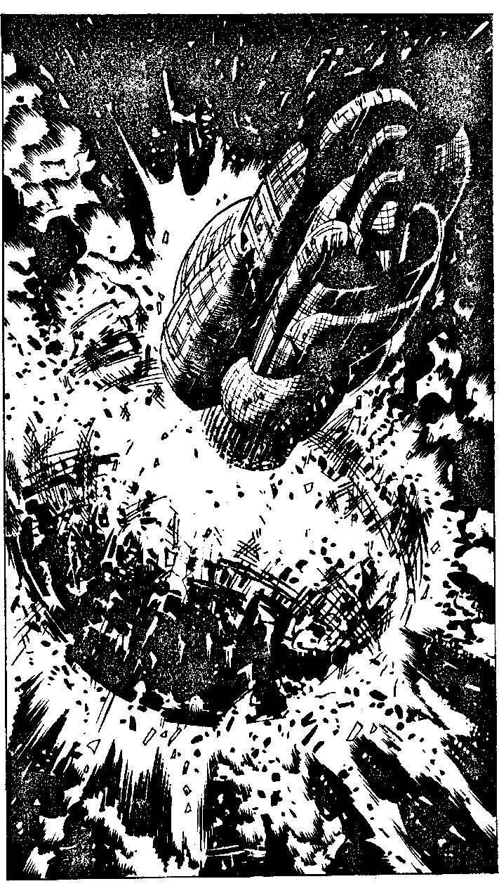

411
The surface of Mechanon is wreathed in flames and as you watch a fuel refinery explodes, sending a pillar of flame into the upper atmosphere. The droids are motionless, the space- artillery tubes hang down limply. Mechanon is dead. As the Strike Fighter climbs away from the stricken planet, something happens which you can hardly comprehend, let alone believe. The planet splits into two flaming halves. Its centre has been mined out centuries ago and from the hollowness within flies a ship as large as a mountain. It rumbles skyward on the thrust of a hundred colossal fusion tubes. This must be the planet killer which the computer launched. Its size alone would mean that Earth would be destroyed if it hit a continent at two-tenths the speed of light, but you can tell at a glance that it is a single flying bomb. The planet killer accelerates towards hyper-space speed and CAIN confirms that it is almost certainly on course for Earth. Will you:
| Try to destroy the planet killer? | Turn to 55 |
| Ask CAIN if there are any other options? | Turn to 290 |